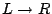

In the Asf+Sdf Meta-Environment, equations can be executed as rewrite rules. The above equation is thus executed as the rewrite rule . This can be used to reduce some initial closed term (i.e., not containing variables) to a normal form (i.e., a term that is not reducible any further) by repeatedly applying rules from the specification.
A term is always reduced in the context of a certain module, say  . The
rewrite rules that may be used for the reduction of the term are the rules
declared in
. The
rewrite rules that may be used for the reduction of the term are the rules
declared in  itself and in the modules that are (directly or indirectly)
imported by
itself and in the modules that are (directly or indirectly)
imported by  .
.
The search for an applicable rule is determined by the reduction strategy, that is, the procedure used to select a subterm for possible reduction. In our case the leftmost-innermost reduction strategy is used. This means that a left-to-right, depth-first traversal of the term is performed and that for each subterm encountered an attempt is made to reduce it.
Next, the rules are traversed one after the other. The textual order of the rules is irrelevant. Instead they are ordered according to their specificity: more specific rules come before more general rules and default equations[ (see Section )]DefaultEquations come last. Independent of the specificity, a specification should always be confluent and terminating.
If the selected subterm and the left-hand side of a rule (more precisely: of the left-hand side of its conclusion) match, we say that a redex has been found and the following happens. The conditions of the rule are evaluated and if the evaluation of a condition fails, other rules (if any) with matching left-hand sides are tried. If the evaluation of all conditions succeeds, the selected subterm is replaced by the right-hand side of the rule (more precisely: the right-hand side of the conclusion of the rule) after performing proper substitutions. Substitutions come into existence by the initial matching of the rule and by the evaluation of its conditions. For the resulting term the above process is repeated until no further reductions are possible and a normal form is reached (if any).